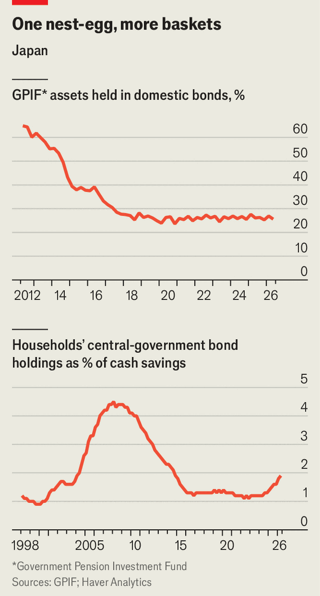

Who will buy $120bn-worth of fresh Japanese government bonds?
Japan wants its pension fund and households to buy more government debt
Oct 22nd 2026
OF THE MANY reinventions of Suzuki Airi, a singer-turned-model-turned-actress, one stands out. In an ad campaign released earlier this year by Japan’s finance ministry, an all-pink Ms Suzuki hawks government debt. Perched on her shoulder are the official mascots of its “retail government bonds plus” programme: Kokusai-sensei, a cartoon professor shaped like part of the Japanese word for government bond, and Koko-chan, his girlish companion. The pair encourages savers to “add peace of mind” with “plus-plus”.
Peace of mind is in short supply for those trading Japanese government bonds (JGBs) for a living. Last month the yield on ten-year JGBs passed 3% for the first time since 1996, up from 2% in January. Investors worry about persistent inflation—a novelty in a country until recently plagued by years of falling prices. This makes them less keen on government debt at a time when lots of bonds are hitting the market.
Takaichi Sanae, the prime minister, has pledged ¥120trn ($700bn, or 18% of last year’s GDP) in new public investment by 2040. She is backing strategic industries, from shipbuilding to chipmaking, while raising spending on defence and cutting sales taxes on food. Her promises to do all this without funding government budget deficits through new bonds are taken with a generous dash of soy sauce. Goldman Sachs, a bank, expects that a “primary” deficit (before interest payments) of 1.5% of GDP will raise total JGB issuance by ¥19trn in fiscal year 2027. And investors also have their pick of corporate bonds, a record ¥17trn-worth of which was sold in the 12 months to March.

Who will buy all that? The usual buyers are not as reliable as they once were. Life-insurance companies, which bought loads before new accounting rules for assets took effect in March, have gone quiet. The Bank of Japan (BoJ), which owns 44% of all JGBs, is unwinding a balance-sheet bloated by more than a decade of bond-buying.
To help digest the rising supply, the government is targeting new sources of demand. One is the Government Pension Investment Fund (GPIF), the country’s $1.9trn nest-egg. After a raft of economic reforms in 2014, low-yielding domestic bonds fell to a quarter of its portfolio, down from two-thirds in 2012 (see chart, top panel). The finance minister says that GPIF should make “substantially greater investments” in domestic assets. Were it to raise its domestic-bond allocation to 30% or so, as the current rules allow, that could create another ¥15trn in JGB demand, estimates Morgan Stanley, another bank.
The bigger potential pool of buyers are the everyday investors wooed by Ms Suzuki and her two sidekicks (see chart, bottom panel). They hold more than ¥1,100trn (around 165% of GDP) in cash savings in bank deposits, against ¥22trn in JGBs. Given that a two-year lockup deposit now returns around 0.7% a year, households may well be tempted by the 2% on offer from retail JGBs. Were they to raise their JGB allocations back to 4% of savings, the level in the late 2000s, from 2% today, it could create perhaps ¥20trn in fresh demand.
Yet both of these sources of demand face barriers. GPIF targets nominal investment returns of around 5%, higher than the 4% from the highest-yielding JGBs (with a maturity of 40 years). A bigger JGB allocation therefore risks undercutting GPIF’s goals. Savers, for their part, are sceptical that retail JGBs will protect their cash from inflation. “The state is trying to generate inflation so it can recover its debt while encouraging ordinary people to buy government bonds. It’s a trap, really,” warns Yohei, a Japanese fin-fluencer.
The government’s retail-JGB push is also in tension with NISA, popular tax-free stock-investing accounts. Though some politicians want to make JGBs eligible for NISA, that would muddy the programme’s aim of creating more home-grown risk capital that Japan has lacked lately.
Japan may, then, have little choice but to rely on the flightier demand from abroad. Hedge funds and other foreigners are buying 60% of JGBs on the secondary market, up from 36% in 2019 (excluding those sold to middlemen). In general they drive a harder bargain. Thankfully, though, they are drawn by Japan’s “yield curve”, the interest rates at which the government borrows over different time periods, which is one of the world’s steepest. Japan’s ten-year yield is 1.6 percentage points higher than its three-month yield. In America, the gap is around half that.
A steep yield curve appeals to foreign investors. A bond’s local-currency returns depend on its yield, which is rising for longer-duration JGBs, whereas the cost of hedging currency risk is set in part by differences in short-term rates, which have not moved enough to offset the yield gains. A currency-hedged American investor buying JGBs would now earn about 0.8 percentage points of additional returns above the equivalent Treasury bond, estimates Ralf Preusser of Bank of America. Having to compete for flighty foreign capital may feel uncomfortable for a country accustomed to sleepy bond markets. But at least Japan has something to offer. ■